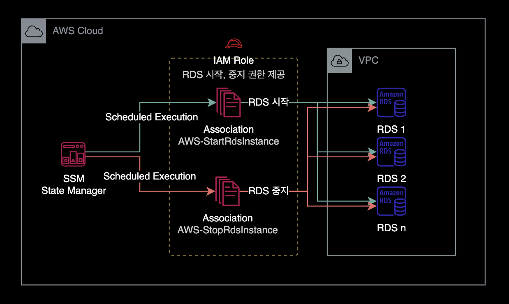
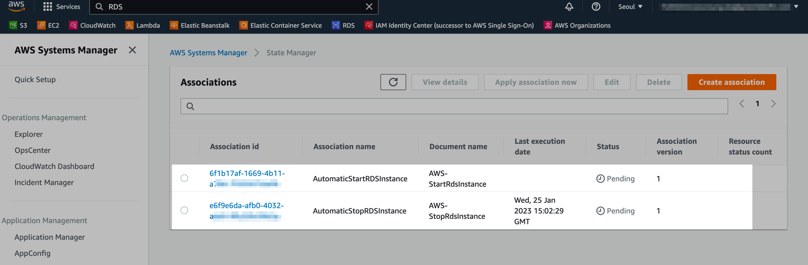

RDS 가동시간 스케줄링 자동화
개요
클라우드 비용 절감을 위해 업무 시간 외에 DB 인스턴스를 자동종료하는 방법을 소개합니다.
AWS Systems Manager에서는 AWS-StartRdsInstance와 AWS-StopRdsInstance라고 하는 Document를 제공합니다.
이 방법을 사용하면 별도의 Lambda Function 생성 없이도 여러 개의 RDS 인스턴스를 자동 시작, 중지를 자동화할 수 있습니다.
환경
완성된 AWS 아키텍처는 다음과 같습니다.

설정방법
1대의 RDS 인스턴스에 자동 중지, 시작 스케줄을 설정하는 방법입니다.
IAM Role 생성
IAM Policy
해당 Execution Role에 RDS 목록 확인, 시작, 중지, 리부팅에 대한 권한을 부여합니다.
{
"Version": "2012-10-17",
"Statement": [
{
"Sid": "AllowStopAndStartAllRdsInstances",
"Effect": "Allow",
"Action": [
"rds:Describe*",
"rds:Start*",
"rds:Stop*",
"rds:Reboot*"
],
"Resource": "*"
}
]
}
새 IAM Policy 이름은 AutomaticStopStartRebootRDS로 생성합니다.
Trust Relationship
SSM State Manager만 해당 Execution Role에 접근할 수 있도록 제한된 신뢰 관계를 설정합니다.
{
"Version": "2012-10-17",
"Statement": [
{
"Effect": "Allow",
"Principal": {
"Service": "ssm.amazonaws.com"
},
"Action": "sts:AssumeRole"
}
]
}
새 IAM Role 이름은 AutomaticStopStartRebootRDS로 생성합니다.
Association 생성
Cron 표현식
작성 시 주의사항
Association 생성 시 Cron Expression에 입력하는 시간은 UTC 기준입니다.
KST와 UTC는 9시간 차이가 나므로 원하는 시간대에 맞게 설정하려면 UTC 시간대로 변환하여 입력해야 합니다.
cron 표현식 치트시트
AWS SSM State Manager에서 사용하는 Cron 표현식은 다음과 같습니다.
cron(* * * * * *)
– – – – – -
| | | | | |
| | | | | +—– year
| | | | +—– day of week (SUN - SAT or 1 – 7)
| | | +——- month (1 – 12)
| | +——— day of month (1 – 31)
| +———– hour (0 – 23)
+————- min (0 – 59)
RDS 중지 Association 생성
매일 업무 종료 시간에 지정한 RDS를 중지합니다.
아래 예시의 경우, 업무 종료 시간은 KST PM 06:00 (= UTC AM 09:00)를 의미합니다.
$ aws ssm create-association \
--association-name "AutomaticStopRDSInstance" \
--parameters "AutomationAssumeRole=arn:aws:iam::<YOUR_ACCOUNT_ID>:role/AutomaticStopStartRebootRDS,InstanceId=<YOUR_TARGET_RDS_NAME>" \
--schedule-expression "cron(0 9 ? * * *)" \
--name AWS-StopRdsInstance \
--apply-only-at-cron-interval \
--tags "Key=ManagedBy,Value=Console"
RDS 시작 Association 생성
매일 업무 시작 시간에 지정한 RDS를 시작합니다.
아래 예시의 경우, 업무 시작 시간은 KST AM 09:00 (= UTC AM 00:00)를 의미합니다.
$ aws ssm create-association \
--association-name "AutomaticStartRDSInstance" \
--parameters "AutomationAssumeRole=arn:aws:iam::<YOUR_ACCOUNT_ID>:role/AutomaticStopStartRebootRDS,InstanceId=<YOUR_TARGET_RDS_NAME>" \
--schedule-expression "cron(0 0 ? * * *)" \
--name AWS-StartRdsInstance \
--apply-only-at-cron-interval \
--tags "Key=ManagedBy,Value=Console"
AWS Systems Manager → State Manager → Associations를 확인한 결과입니다.

RDS 시작 Association, 중지 Association 총 2개가 생성된 것을 확인할 수 있습니다.
현재 저희는 Association 생성할 때 --apply-only-at-cron-interval 옵션을 실행해서 즉시 테스트해볼 수 없습니다.
즉시 테스트를 원하는 경우, 상단에 Apply association now 버튼을 클릭합니다. Association이 의도한 대로 잘 동작하는 지 테스트할 수 있습니다.
주의사항
State Manager의 cron 표현식 한계
아쉽게도 State Manager의 Association에서는 cron(0 8 ? * MON-FRI *)와 같은 평일 기간 Cron 표현을 지원하지 않습니다.
자세한 사항은 AWS 공식문서 Association의 Cron and Rate 표현식를 참조하세요.
더 나아가서
maintenance window
이 가이드에서는 SSM의 State Manager를 사용하여 RDS 자동시작과 중지 스케줄링을 구현했습니다. 더 나아가서 SSM의 Maintenance Window로도 RDS 자동시작, 중지를 자동화해봅니다.

SSM의 State Manager 대신 Maintenance Window를 사용해서 구현하면 State Manager와 비교해서 크게 2가지 장점이 있습니다.
- cron 요일 기간 사용 :
cron(0 8 ? * MON-FRI *)와 같은 평일 기간 Cron 표현식을 사용할 수 있습니다. - 타임존 설정 가능 :
maintenance window는Asia/Seoul과 같은 Time Zone을 설정할 수 있어서 스케줄 시작, 중지시간 관리 및 계산이 더 편합니다.
더 읽으러 가기
maintenance window로 RDS 가동시간 자동화
참고자료
Schedule Amazon RDS stop and start using AWS Systems Manager
Automatically stop and start an Amazon RDS DB instance using AWS Systems Manager Maintenance Windows
AWS Systems Manager의 Maintenance Windows 기능을 활용하는 방법도 있습니다.
Maintenance Windows에서는 MON-FRI와 같은 평일 기간 Cron 표현식을 지원합니다.